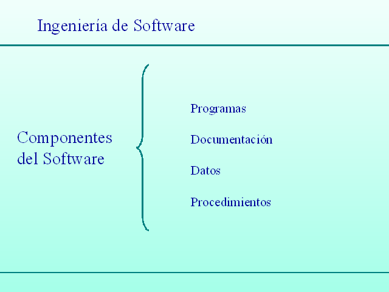

Es una especialidad de la ingeniería que tiene como objetivo principal, el desarrollo costeable de sistemas de software confiables que funcionen de modo eficiente y comprende todos los aspectos de la producción del software.
El software presenta 3 elementos que lo caracterizan:
Hay 2 tipos de derivados de software cuando se desarrolla: Por un lado los productos genéricos y por otro lo productos personalizados.
